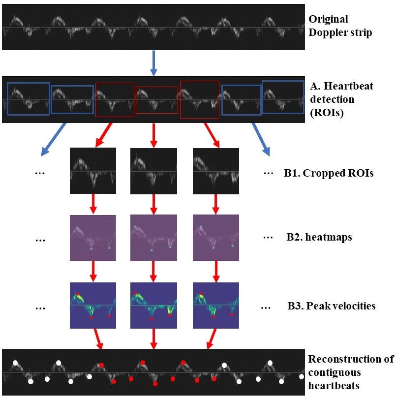
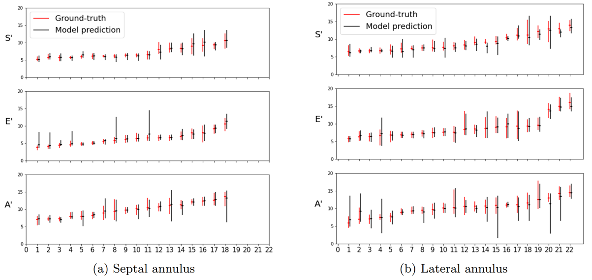

<!DOCTYPE html>
<html lang="en">

<!-- ======= Head Section - DON'T CHANGE ======= -->
<head> <!--test-->
  <meta charset="utf-8">
  <meta content="width=device-width, initial-scale=1.0" name="viewport">
  <title>TDI</title>
  <link href="assets/img/logo.png" rel="icon">
  <!-- Google Fonts -->
  <link href="https://fonts.googleapis.com/css?family=Open+Sans:300,300i,400,400i,600,600i,700,700i|Raleway:300,300i,400,400i,500,500i,600,600i,700,700i|Poppins:300,300i,400,400i,500,500i,600,600i,700,700i" rel="stylesheet">
  <!-- Vendor CSS Files -->
  <link href="assets/vendor/aos/aos.css" rel="stylesheet">
  <link href="assets/vendor/bootstrap/css/bootstrap.min.css" rel="stylesheet">
  <link href="assets/vendor/bootstrap-icons/bootstrap-icons.css" rel="stylesheet">
  <link href="assets/vendor/boxicons/css/boxicons.min.css" rel="stylesheet">
  <link href="assets/vendor/glightbox/css/glightbox.min.css" rel="stylesheet">
  <link href="assets/vendor/remixicon/remixicon.css" rel="stylesheet">
  <link href="assets/vendor/swiper/swiper-bundle.min.css" rel="stylesheet">
  <!-- Main CSS File -->
  <link href="assets/css/style.css" rel="stylesheet">
</head>

<!-- ======= Body Section ======= -->
<body>
  <!-- ======= Navigation Bar - DON'T CHANGE ======= -->
  <header id="header" class="fixed-top">
    <div class="container d-flex align-items-center justify-content-between">
      <a href="index.html" class="logo"></a>
      <nav id="navbar" class="navbar">
        <ul>
          <li><a class="nav-link scrollto" href="index.html">Home</a></li>
          <li><a class="nav-link scrollto" href="index.html#projects">Projects</a></li>
          <li><a class="nav-link scrollto" href="index.html#team">People</a></li>
          <li><a class="nav-link scrollto" href="index.html#resources">Resources</a></li>
          <li><a class="nav-link scrollto" href="index.html#funding">Funding</a></li>
          <li><a class="nav-link scrollto" href="index.html#partners">Partners</a></li>
          <li><a class="nav-link scrollto" href="index.html#workwithus">Vacancies</a></li>
          <li><a class="nav-link scrollto" href="index.html#contact">Contact</a></li>
        </ul>
        <i class="bi bi-list mobile-nav-toggle"></i>
      </nav>
    </div>
  </header><!-- End Navigation Bar -->

    <!-- ======= Title Section ======= -->
    <section id="project-title" class="d-flex align-items-center">
      <div class="container position-relative" data-aos="fade-up" data-aos-delay="100">
        <div class="row">
          <div class="col-12 text-left">
            <h1>Automated Multibeat Tissue Doppler Echocardiography Analysis Using Deep Neural Networks</h1>
            </div>
          </div>
        </div>
    </section><!-- End Title -->

    <!-- Main Webpage Section -->
  <main id="project-main">

    <!-- ======= Project Body Section ======= -->
    <section id="project-body">

      <!-- ======= Project Introduction ======= -->
      <div class="project-intro">
        <div class="container">
          <div class="row justify-content-left">
            <div class="col-12">
              <hr>
              <h1><b>Abstract</b> </h1><br>
              <h1>Tissue Doppler Imaging is an essential echocardiographic technique for the non-invasive assessment of myocardial blood velocity. Interpretation by trained experts is time-consuming
                and disruptive to workflow. This study presents an automated deep learning model, trained
                and tested on Doppler strips of arbitrary length, capable of rapid beat detection and Cartesian coordinate localisation of peak velocities with accuracy indistinguishable from human
                experts, but with greater speed.</h1>
              <br>
            </div>
          </div>
          <!--  <div class="text-left">
              <a class="btn btn-primary" href="https://link.springer.com/article/10.1007/s10554-017-1092-4" role="button">Download the paper</a>
            </div>-->
          </div>
        </div>

      <!-- ======= Project Dataset ======= -->
      <div class = "project-dataset">
        <div class="container project-container">
          <div class="row justify-content-left d-flex flex-wrap align-items-center">
            <div class="col-12 col-md-12 col-lg-6 col-xl-6">
            
            </div>
            <div class="col-12 col-md-12 col-lg-6 col-xl-6">
              <h2>Introduction</h2>
              <h3>Tissue Doppler imaging (TDI) is a relatively new echocardiographic technique that uses
                Doppler principles to measure the velocity of myocardial motion. Clinical guidelines recommend averaging peak velocity measurements over a minimum of three consecutive beats. However, echocardiographers often select beats they consider an
                average representative sample which may contribute to test-retest variability, leading to
                diagnostic errors. A reliable and objective automated system would
                save valuable resources for health services and has potential to improve patient outcomes
                by averaging measurements over more beats. By removing manual detection, specialists’
                time can be better spent acquiring more high-quality beats, reducing subjectivity and cost.<p>
               In the example image, each cardiac cycle is indicated by a red vertical line with annotations from two trained experts for each keypoint. Expert 1 is a cross, with expert 2 a square.
              </h3>
              <br>
              <div class="text-left">
                <a class="btn btn-primary" href="#contact" role="button">Download the dataset</a>
              </div>
            </div>
          </div>
        </div>

        <!-- ======= Project Architecture ======= -->
      <div class = "project-architecture">

          <div class="container">
            <hr>
            <div class="row justify-content-left">
              <div class="col-12">
              <h2>Method</h2>
            </div>
              <div class="col-12 col-md-12 col-lg-6 col-xl-8">
                  <h3>TDI traces were acquired from 48 patients with a mean age of 64±11 years, from both the
                    septal and lateral annuli. Information about the dataset and patient characteristics can be
                    found in. Six recordings were acquired for each patient and reconstructed into a continuous Doppler strip with a resolution of 900 x 1300 pixels. Information
                    about the reconstruction methods can be found in. The dataset
                    comprises 280 Doppler strips (5,327 beats). Annotations are from three expert clinicians;
                    ground-truth labels for Model training and evaluation were calculated as the expert consensus. Additionally, for the purpose of investigating inter-observer variability, three additional
                    networks were trained on individual expert labels, named Model-1, Model-2 and Model-3, respectively.
                    <br>The network architecture is two-fold:<br><br>
                    <b>A.</b> Heartbeats are detected/isolated
                    (without the need for ECG signal)
                    as a ROI by the Mask R-CNN architecture with a ResNet101 backbone. Images are resized and
                    zero padded to 1024x1024 pixels<br><br>
                    <b>B1-B3.</b> ROI is cropped and resized to 192 x 192 pixels and input
                    to a convolutional heatmap regression model to predict Cartesian coordinates for systolic and diastolic
                    peak velocities (S’, E’ and A’), as
                    shown in the figure to the right.</h3>
                </div>
                <div class="col-12 col-md-12 col-lg-6 col-xl-4">
                  <br>
                  
                </div>
              </div>
            </div>
          </div>

        <!-- ======= Project Implementation ======= -->
        <div class = "project-implementation">
          <div class="container">
            <div class="row justify-content-left">
              <div class="col-12">
                <hr>
                <h2>Results and Discussion</h2>
                <h3>Computation time for manual peak velocity annotations by human experts, compared to
                  the automated model, was calculated over an average sample of 25 heartbeats; 4.76 seconds
                  and 0.18 milliseconds, respectively. Cartesian coordinates in pixels were converted into
                  Velocity measurements in cm/s.</h3>
                  <br>
                  
                  <br><br>
                  <h3>The figure above shows mean septal S’, E’ and A’ velocity estimates and standard deviations
                    using the experts consensus (red) and the Model (black) for each patient. Circular markers represent the mean and vertical bars represent the standard deviation. Patients have been
                    placed in ascending order of the average velocity.
                    Table 1 details Bland–Altman bias and 95% limits of agreement when comparing expert
                    annotations and Model predictions for peak tissue Doppler velocity measurements at the
                    septal and lateral annulus.
                    We demonstrate the performance of the proposed Model is akin to human experts; detection
                    error is within the range of calculated inter-observer variability, however processing time is
                    greatly reduced.</h3><br><br>

                    <div class="table-responsive">
                      <table class="table table-hover table-light align-middle">
                    			<thead>
                    				<tr>
                    					<th rowspan="2">Model/Expert</th>
                    					<th colspan="3">Septal annulus</th>
                    					<th colspan="3">Lateral annulus</th>
                    				</tr>
                    				<tr>
                    					<th>S'</th>
                    					<th>E'</th>
                    					<th>A'</th>
                              <th>S'</th>
                    					<th>E'</th>
                    					<th>A'</th>
                    				</tr>
                    			</thead>
                    			<tbody>
                            <tr>
                              <td colspan="7"><b>Human performance</b></td>
                            </tr>
                    				<tr>
                    					<td>Exp 1,2 vs. Expert-3</td>
                    					<td>0.13±0.59</td>
                    					<td>-0.18±0.59</td>
                    					<td>-0.06±0.84</td>
                    					<td>0.33±0.91</td>
                              <td>0.15±0.92</td>
                    					<td>0.11±0.84</td>
                    				</tr>
                            <tr>
                    					<td>Exp 1,3 vs. Expert-2</td>
                    					<td>0.06±0.50</td>
                    					<td>-0.22±0.60</td>
                    					<td>0.29±0.70</td>
                    					<td>0.33±0.87</td>
                              <td>0.12±0.80</td>
                    					<td>0.17±0.75</td>
                    				</tr>
                            <tr>
                    					<td>Exp 2,3 vs. Expert-1</td>
                    					<td>-0.19±0.63</td>
                    					<td>-0.04±0.56</td>
                    					<td>-0.24±0.69</td>
                    					<td>-0.66±0.94</td>
                              <td>-0.27±0.77</td>
                    					<td>-0.27±0.78</td>
                    				</tr>
                            <tr>
                    					<td>Expert consensus</td>
                    					<td>-0.14±0.67</td>
                    					<td>0.06±0.70</td>
                    					<td>-0.08±0.90</td>
                    					<td>-0.44±1.10</td>
                              <td>-0.19±0.97</td>
                    					<td>-0.17±0.92</td>
                    				</tr>
                            <tr>
                              <td colspan="7"><b>Machine performance</b></td>
                            </tr>
                            <tr>
                    					<td>Exp 1, 2 vs. Model-3</td>
                    					<td>-0.01±0.82</td>
                    					<td>-0.42±1.00</td>
                    					<td>-0.11±0.85</td>
                    					<td>0.59±0.93</td>
                              <td>0.08±1.32</td>
                    					<td>0.38±1.87</td>
                    				</tr>
                            <tr>
                    					<td>Exp 1, 3 vs. Model-2</td>
                    					<td>0.04±0.93</td>
                    					<td>0.15±0.94</td>
                    					<td>0.44±0.98</td>
                    					<td>0.50±0.93</td>
                              <td>0.19±1.10</td>
                    					<td>0.21±1.66</td>
                    				</tr>
                            <tr>
                    					<td>Exp 2, 3 vs. Model-1</td>
                    					<td>-0.12±0.97</td>
                    					<td>-0.17±0.94</td>
                    					<td>-0.15±0.99</td>
                    					<td>-0.11±1.02</td>
                              <td>-0.04±0.93</td>
                    					<td>-0.04±1.35</td>
                    				</tr>
                            <tr>
                    					<td>Expert consensus vs. Model</td>
                    					<td>-0.07±0.78</td>
                    					<td>-0.22±0.92</td>
                    					<td>-0.02±0.88</td>
                    					<td>-0.38±0.81</td>
                              <td>-0.06±0.84</td>
                    					<td>0.19±1.38</td>
                    				</tr>
                    			</tbody>
                    		</table>
                    </div>
                </div>
              </div>
                <div class="text-left">
                  <br>
                  <a class="btn btn-primary" href="https://github.com/elisabethlane/Keypoint-Detection-Multi-Stage-Heatmap-Regression" role="button">Download the code</a>
                </div>
              </div>
            </div>
          </div>
        </div>

    <!-- ======= Contact Section ======= -->
      <section id="contact" class="contact">
        <div class="container">
          <div class="section-title">
            <hr>
            <h2>Request Access to the project dataset</h2>
            <h3>We aim to make the dataset available for research purposes soon.</h3>

            <div class="container">
              <div class="section-title">
                <h3><b>If you wish to request access, please complete the form below:<b></h3>
                  <br>
                </div>
                      <div class="row">

                        <div class="col-12">
                          <!-- due to GitHub being static, you need to create a form project on https://formspree.io -->
                          <form action="https://formspree.io/f/xvojyeao" method="post" role="form">
                            <div class="row justify-content-center align-middle">
                              <div class="col-6 form-group">
                                <input type="text" name="name" class="form-control" id="name" placeholder="Your Name" required>
                              </div>
                              </div>
                            <div class="row justify-content-center align-middle">
                              <div class="col-6 form-group">
                                <input type="email" class="form-control" name="email" id="email" placeholder="Your Email" required>
                              </div>
                            </div>
                            <div class="row justify-content-center align-middle">
                            <div class="col-6 form-group ">
                              <input type="text" class="form-control" name="institution" id="subject" placeholder="Institution/Workplace" required>
                            </div>
                            </div>

                            <div class="row justify-content-center align-middle">
                            <div class="col-6 form-group ">
                              <input type="text" class="form-control" name="dataset" id="dataset" value="TDI" readonly>
                            </div>
                            </div>
                            
                            
                            <div class="row justify-content-center align-middle">
                            <div class="col-9 form-group">
                              <textarea class="form-control" name="message" rows="5" placeholder="Please let us know why you would like access to this dataset and what you intend to use it for" required></textarea>
                            </div>
                            </div>
                            <br>
                            <div class="text-center"><button type="submit">Submit</button></div>
                          </form>

                        </div>

                      </div>

                      </div>
                    </div>
                      <div class="container">
                        <hr>

                          <div class="row justify-content-left">
                            <div class="col-12">
                              <div class="text-left">
                                <h1> <b> Project Team <b></h1> <br>
                                  <h6> <a href="https://elisabethlane.github.io/" target="_blank" rel="noopener noreferrer"> Elisabeth S Lane  </a></h6>
                                  <h6>  <a href="https://twitter.com/intsav_?lang=en-gb" target="_blank" rel="noopener noreferrer"> Jevgeni Jevsikov</a></h6>
                                  <h6> <a href="https://www.uwl.ac.uk/staff/massoud-zolgharni" target="_blank" rel="noopener noreferrer"> Massoud Zolgharni  </a></h6>

                              </div>
                            </div>
                          </div>

                        </div>


                      <div class="container">
                            <hr>

                                <div class="row justify-content-left">
                                <div class="col-12">
                              <div class="text-left">
                                    <h1>  <b> References </b></h1>
                                          <br>
                                              <h3> <a  href="https://link.springer.com/article/10.1007/s10554-017-1092-4" >TDI Beat and Keypoint Detection</a></h3>
                                              <h3> <a  href="https://link.springer.com/article/10.1007/s11517-022-02753-3" >Automated multi-beat tissue Doppler echocardiography analysis using deep neural networks</a></h3>  
                                    </div>
                                  </div>
                                  </div>

                                </div>
                              </div>
              </section><!-- End Contact Section -->

          </section><!-- End project-body -->

      </main><!-- End #main -->

  <!-- ======= Footer - DONT CHANGE ======= -->
  <footer id="footer">


    <div class="container d-md-flex py-4">

      <div class="me-md-auto text-center text-md-start">
        <div class="copyright">
          &copy; Copyright <strong><span>IntSaV</span></strong>. All Rights Reserved
        </div>

      </div>
      <div class="social-links text-center text-md-right pt-3 pt-md-0">
        <a href="#" class="twitter"><i class="bx bxl-twitter"></i></a>
        <a href="#" class="facebook"><i class="bx bxl-facebook"></i></a>
        <a href="#" class="instagram"><i class="bx bxl-instagram"></i></a>
        <a href="#" class="google-plus"><i class="bx bxl-skype"></i></a>
        <a href="#" class="linkedin"><i class="bx bxl-linkedin"></i></a>
      </div>
    </div>
  </footer><!-- End Footer -->

  <div id="preloader"></div>
  <a href="#" class="back-to-top d-flex align-items-center justify-content-center"><i class="bi bi-arrow-up-short"></i></a>

  <!-- Vendor JS Files -->
  <script src="assets/vendor/aos/aos.js"></script>
  <script src="assets/vendor/bootstrap/js/bootstrap.bundle.min.js"></script>
  <script src="assets/vendor/glightbox/js/glightbox.min.js"></script>
  <script src="assets/vendor/isotope-layout/isotope.pkgd.min.js"></script>
  <script src="assets/vendor/php-email-form/validate.js"></script>
  <script src="assets/vendor/purecounter/purecounter.js"></script>
  <script src="assets/vendor/swiper/swiper-bundle.min.js"></script>

  <!-- Template Main JS File -->
  <script src="assets/js/main.js"></script>

</body>

</html>
